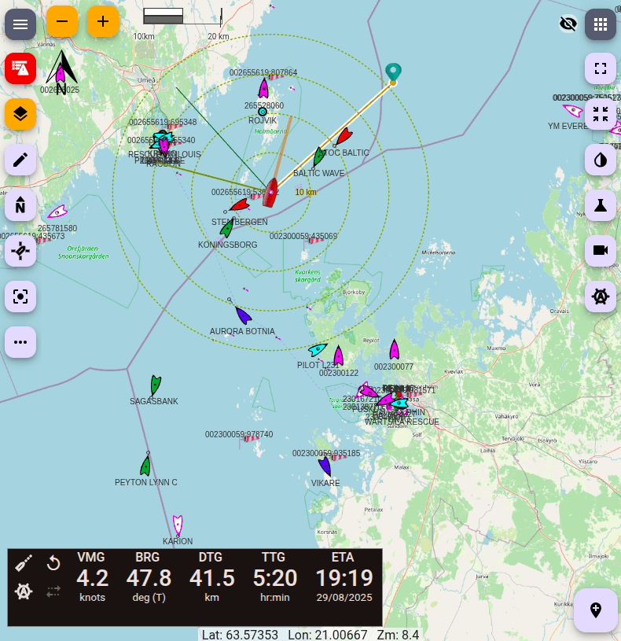

Introduction
Freeboard is an Openlayers based chart plotter that uses
Signal K communication protocols and Signal K server features
to provide the following functionality:
- Moving Vessel / Map display with vessel Heading / Bearing and True Wind / Apparent Wind lines.
- Charts display including both online and locally hosted.
- Route and Waypoint List and filter resources, drop waypoints, draw routes, set active route and import from GPX files.
- Anchor Watch: and Depth alarms (visual and sound).
- Instrument Panel: allows you to select from the apps installed on your Signal K server for display.
- AIS target display.
Visit us at GitHub
Signal K Server
Freeboard is a "stateless" application which can be used concurrently at multiple stations
to both display and send back information to the Signal K server.
Therefore Freeboard requires that the host Signal K server be able to service requests
to the following paths for all functionality to be available:
- reources/routes and resources/waypoints - Serve resources as well as accept and persist resource data submitted to these paths.
- resources/charts - Serve chart resources.
- navigation/anchor, notifications/navigation/anchor - Serve and accept `position`, `maxRadius` values as well as calculate `currentRadius` and serve notifications.
- notifications/environment/depth - Serve notifications for belowKeel, belowSurface and belowTransducer.
- navigation/courseGreatCircle/activeRoute - Serve and accept href & startTime values to allow a route to be set as active. It is expected that the server will initiate any subsequent calculations and related value updates.
Display
Freeboard provides a moving Vessel / Map display for both your vessel
 and other vessels
and other vessels  (via AIS).
(via AIS).

The menu bar along the left of the screen provides access to functions and
menus that allow you control the map display.
 Heading / North Up:
Toggles between Heading / North Up mode.
Heading / North Up:
Toggles between Heading / North Up mode.
 Follow Vessel On / Off:
Toggles Follow Vessel mode to keep the vessel at the centre of the
screen.
Follow Vessel On / Off:
Toggles Follow Vessel mode to keep the vessel at the centre of the
screen.Note: this option is disabled when vessel position is not available.
 Centre Vessel on screen:
Note: This option is disabled when vessel position is not available.
Centre Vessel on screen:
Note: This option is disabled when vessel position is not available.
 More Actions:
Menu containing options to:
Show / Hide AIS Targets,
Clear Vessel Trail and
Clear Navigation Data
More Actions:
Menu containing options to:
Show / Hide AIS Targets,
Clear Vessel Trail and
Clear Navigation Data
 Instrument panel: The instrument panel can contain any WebApp installed on
the Signal K server.
Instrument panel: The instrument panel can contain any WebApp installed on
the Signal K server.The default instruments shown are @signalk/instrumentpanel
You can select which application to display from the Settings screen.
Vessel: displays the current position and heading of your vessel.
Note: Vessel icon is not displayed when vessel position is not available.
Additionally, Heading, Bearing True Wind Direction and Apparent Wind Angle
lines are displayed with the vessel when the information is available.

Active AIS Target: displays the current position and heading
for an AIS target for which
an update has been received in the last 6 mins.
 Inactive AIS Target: displays the last received position and heading
for an AIS target for which
an update has NOT been received for more than 6 mins.
Inactive AIS Target: displays the last received position and heading
for an AIS target for which
an update has NOT been received for more than 6 mins.
Note: AIS Targets are removed from display after there has been no
update received for 9 mins or more.
Clicking on an AIS target or vessel icon will display an information window
containing vessel data and available actions.


Resources
Freeboard provides functionality for Route, Waypoint and Chart resources.
 Routes:
Displays a list of available Routes.
Routes:
Displays a list of available Routes.

Note: Deleting a route will also delete the associated Start and End Waypoints!
 Waypoints:
Displays a list of available Waypoints.
Waypoints:
Displays a list of available Waypoints.

Note: A waypoint may be associated with a route. so take care when deleting waypoints!
Additionally, you can click on both Routes and Waypoints to display an information window available actions.


 Draw Menu:
The Draw menu is where you will find options to:
Draw Menu:
The Draw menu is where you will find options to:
 Charts:
Displays a list of available Charts.
Charts:
Displays a list of available Charts.

Local Charts hosted on the Signal K server are identified with the
icon.
Charts are displayed in descending order of scale to ensure more detailed charts are on top.
 Load from GPX:
Load Route and Waypoint resources from GPX file.
Load from GPX:
Load Route and Waypoint resources from GPX file.

After selecting the resources click Load Selected to load the resources onto the Signal K server.
Navigation
Freeboard will display course data in either the navigation.courseGreatCircle or navigation.courseRhumbline paths when received from the server.
To display course data when it is available from the server,
click and
select Show Course Data.
If the server stops sending course data, the last received values
will remain on the screen.
To hide the course data display until the next set of data is
received, click and
select Clear Course Data from the menu.

Anchor Watch
Set anchor watch alarm.


Settings
The Settings screen is where you can configure Freeboard and it consists of the following sections:
DISPLAY:
This section provides choices about how information is displayed.

- Instrument Panel App:
Select from a list of installed applications the one you wish to
be displayed in the Instrument Panel.
Note: The application selected should be responsive to display correctly within the space afforded by the instrument panel. - Show DEPTH Alarm Messages: Check this box if you want received DEPTH notifications from the Signal K server to be displayed as an alarm message.
- Alarm Smoothing Time: Once the DEPTH alarm message has been acknowledged and the notification state has returned to Normal, this is the length of time that the notification must remain in Normal state before the alarm is re-triggered.
- Display Vessel Trail: Check this box if you want to display the vessel trail.
UNITS & VALUES:
This section provides choices about the units and values used when displaying data.

Distance Units:
Kilometres / Nautical Miles
Depth Units:
Metres / Feet
Preferred Heading: headingTrue / headingMagnetic
Value used to display vessel heading when both are available.
SERVER:

- Server Resource Updates: Un-check this box if you want to use UPDATES messages to send information to the server rather than PUT requests.
Un-checking this option will cause UPDATES messages to be sent, which essentially broadcasts the information and does not elicit a specific response from the Signal K server regarding the sucess or failure of an operation.
This option can be used when the Signal K server does not accept requests for the paths required for Freeboard functions.